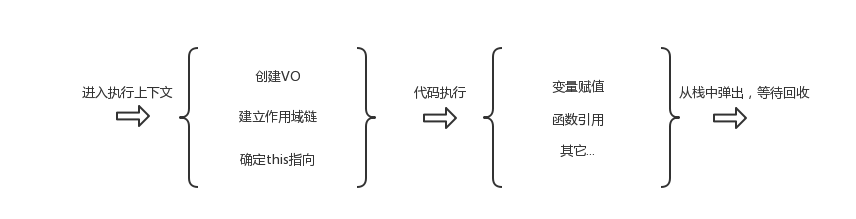

<!DOCTYPE html>
<html>
<head><meta name="generator" content="Hexo 3.8.0">
  <meta charset="utf-8">
  
  <title>深入理解JavaScript系列03-变量对象 | LIUXUEWEN&#39;S BLOG</title>
  <meta name="viewport" content="width=device-width, initial-scale=1, maximum-scale=1">
  
    <meta name="keywords" content="LIUXUEWEN,LIUXUEWEN's Blog">
  
  <meta name="description" content="一、前言  每次函数或者构造器的调用都会进入到一个新的上下文，即使函数是在递归的调用自己。结束后会从上下文堆栈中弹出该上下文，结束可以是每次顺利的返回，也可能是因为未被 catch 的异常抛出等原因。   所以，我们将进入执行上下文(下面都简称 EC) 内部一探究竟，本节关注的焦点是一个抽象的概念 – 变量对象(Variable Object 简称VO)，我们在写代码的时候会声明变量或者函数，那么">
<meta name="keywords" content="前端-JS">
<meta property="og:type" content="article">
<meta property="og:title" content="深入理解JavaScript系列03-变量对象">
<meta property="og:url" content="http://liuxuewen-site.github.io/2019/01/28/JS-deep-03/index.html">
<meta property="og:site_name" content="LIUXUEWEN&#39;S BLOG">
<meta property="og:description" content="一、前言  每次函数或者构造器的调用都会进入到一个新的上下文，即使函数是在递归的调用自己。结束后会从上下文堆栈中弹出该上下文，结束可以是每次顺利的返回，也可能是因为未被 catch 的异常抛出等原因。   所以，我们将进入执行上下文(下面都简称 EC) 内部一探究竟，本节关注的焦点是一个抽象的概念 – 变量对象(Variable Object 简称VO)，我们在写代码的时候会声明变量或者函数，那么">
<meta property="og:locale" content="default">
<meta property="og:image" content="http://liuxuewen-site.github.io/2019/01/28/JS-deep-03/1.png">
<meta property="og:updated_time" content="2019-01-28T10:22:27.290Z">
<meta name="twitter:card" content="summary">
<meta name="twitter:title" content="深入理解JavaScript系列03-变量对象">
<meta name="twitter:description" content="一、前言  每次函数或者构造器的调用都会进入到一个新的上下文，即使函数是在递归的调用自己。结束后会从上下文堆栈中弹出该上下文，结束可以是每次顺利的返回，也可能是因为未被 catch 的异常抛出等原因。   所以，我们将进入执行上下文(下面都简称 EC) 内部一探究竟，本节关注的焦点是一个抽象的概念 – 变量对象(Variable Object 简称VO)，我们在写代码的时候会声明变量或者函数，那么">
<meta name="twitter:image" content="http://liuxuewen-site.github.io/2019/01/28/JS-deep-03/1.png">
  
  
    <link rel="icon" href="/favicon.ico">
  
  <link href="//cdn.bootcss.com/font-awesome/4.7.0/css/font-awesome.min.css" rel="stylesheet" type="text/css">
  <link rel="stylesheet" href="/css/style.css">
  <script src="/js/pace.min.js"></script>
  

  
  

</head>
</html>
<body>
  <div id="container">
      <header id="header">
    <div id="banner"></div>
    <div id="header-outer">
        <div id="header-menu" class="header-menu-pos animated">
            <div class="header-menu-container">
                <a href="/" class="left">
                    <span class="site-title">I AM LIUXUEWEN</span>
                </a>
                <nav id="header-menu-nav" class="right">
                    
                    <a href="/">
                        <i class="fa fa-home"></i>
                        <span>Home</span>
                    </a>
                    
                    <a href="/archives">
                        <i class="fa fa-archive"></i>
                        <span>Archives</span>
                    </a>
                    
                    <a href="/about">
                        <i class="fa fa-user"></i>
                        <span>About</span>
                    </a>
                    
                </nav>
                <a class="mobile-header-menu-button">
                    <i class="fa fa-bars"></i>
                </a>
            </div>
        </div>
        <div id="header-row">
            <div id="logo">
                <a href="/">
                    
                </a>
            </div>
            <div class="header-info">
                <div id="header-title">
                    
                    <h2>
                        I AM LIUXUEWEN
                    </h2>
                    
                </div>
                <div id="header-description">
                    
                    <h3>
                        一个 宅不住 的 IT程序员
                    </h3>
                    
                </div>
            </div>
            <nav class="header-nav">
                <div class="social">
                    
                        <a title="Github" target="_blank" href="//github.com/liuxuewen-site">
                            <i class="fa fa-github fa-2x"></i></a>
                    
                        <a title="Weibo" "="">
                            <i class="fa fa-weibo fa-2x"></i></a>
                    
                        <a title="Weixin" "="">
                            <i class="fa fa-weixin fa-2x"></i></a>
                    
                </div>
            </nav>
        </div>
    </div>
</header>
      <div class="outer">
        <section id="main" class="body-wrap"><article id="post-JS-deep-03" class="article article-type-post" itemscope="" itemprop="blogPost">
  <div class="article-inner">
    
      <header class="article-header">
        
  
    <h1 class="post-title" itemprop="name">
      深入理解JavaScript系列03-变量对象
    </h1>
    <div class="post-title-bar">
      <ul>
          
              <li>
                  <i class="fa fa-book"></i>
                  
                      <a href="/categories/前端/">前端</a>
                  
              </li>
          
        <li>
          <i class="fa fa-calendar"></i>  2019-01-28
        </li>
        <li>
          <i class="fa fa-eye"></i>
          <span id="busuanzi_value_page_pv"></span>
        </li>
      </ul>
    </div>
  

          
      </header>
    
    <div class="article-entry post-content" itemprop="articleBody">
      
            
            <h3 id="一、前言"><a href="#一、前言" class="headerlink" title="一、前言"></a>一、前言</h3><p>  每次函数或者构造器的调用都会进入到一个新的上下文，即使函数是在递归的调用自己。结束后会从上下文堆栈中弹出该上下文，结束可以是每次顺利的返回，也可能是因为未被 catch 的异常抛出等原因。</p>
<p>  所以，我们将进入执行上下文(下面都简称 EC) 内部一探究竟，本节关注的焦点是一个抽象的概念 – 变量对象(Variable Object 简称VO)，我们在写代码的时候会声明变量或者函数，那么解释器(interpreter) 是如何、在哪儿找到它们的呢？</p>
<h3 id="二、执行上下文生命周期"><a href="#二、执行上下文生命周期" class="headerlink" title="二、执行上下文生命周期"></a>二、执行上下文生命周期</h3><p>  上一节执行上下文中我们提到，函数或者构造器调用的时候会创建新的执行上下文并压入上下文堆栈中，其生命周期大致如下：</p>
<p>  </p>
<p>  从图中看到三大要素：VO、作用域链(Scope Chain)、this，接下来我们一个一个来，本文针对 VO。</p>
<h3 id="三、VO（变量对象）"><a href="#三、VO（变量对象）" class="headerlink" title="三、VO（变量对象）"></a>三、VO（变量对象）</h3><p>  有很多说法说明什么是 VO，比如:<br>  1）变量与执行上下文相关，它应该知道自己在哪儿以及怎么找到自己，这得益于一种叫做变量对象的机制。<br>  2）所有的执行上下文都有一个与之关联的可变对象，这个对象把声明的函数、变量、参数列表作为其属性，这个可变对象就是 VO。<br>  ……</p>
<p>  万变不离其宗，反正都表示 VO 与执行上下文关联，然后目的是为了存取我们代码中声明的变量、函数、函数的形参。所以，进入执行上下文时，生成 VO，然后按照下面的顺序把属性绑定到 VO:<br>  1）函数的形参<br>  2）函数声明<br>  3）变量声明</p>
<h3 id="四、AO（活动对象）"><a href="#四、AO（活动对象）" class="headerlink" title="四、AO（活动对象）"></a>四、AO（活动对象）</h3><p>  Active Object，活动对象，简称AO，ECMA-262@3 中的解释大概是:</p>
<p>  当控制进入函数代码的执行上下文时，创建一个活动对象并将它与该执行上下文相关联，并使用一个名为 arguments、特征为 { DontDelete } 的属性初始化该对象。该属性的初始值是稍后将要描述的一个参数对象 Arguments Object(简称ArgO)。活动对象纯粹是一种规范性机制，在 ECMAScript 访问它是不可能的。只能访问其成员而非该活动对象本身。对一个基于对象为活动对象的引用值应用调用运算符时，这次调用的 this 值为 null。</p>
<p>  我们总结一下：VO(functionContext) === AO</p>
<p>  1）VO 是不能访问的(除了全局上下文的 VO 可以间接访问)，但是可以访问 AO 的成员(属性)。</p>
<p>  2）VO 和 AO 其实是一个东西，只是处于不同的执行上下文生命周期。AO 存在于执行上下文位于执行上下文堆栈顶部(就是上边说的 当控制进入函数代码的执行上下文时 )的时期，再粗暴点，就是函数调用时，VO 被激活成了 AO。</p>
<p>  3）AO 通过函数的 arguments 属性初始化，其值是一个 ArgO，包括 callee、length、arg 属性，其中 arg 属性就相当于下标，比如第一个参数对应 arg = 0。</p>
<h3 id="五、小试牛刀"><a href="#五、小试牛刀" class="headerlink" title="五、小试牛刀"></a>五、小试牛刀</h3><p>  为了方便说明，我们模拟 VO/AO 是一个对象:<br>  <figure class="highlight bash"><table><tr><td class="gutter"><pre><span class="line">1</span><br></pre></td><td class="code"><pre><span class="line">VO = &#123;&#125;</span><br></pre></td></tr></table></figure></p>
<p>  执行上下文就是这样:<br>  <figure class="highlight bash"><table><tr><td class="gutter"><pre><span class="line">1</span><br><span class="line">2</span><br><span class="line">3</span><br><span class="line">4</span><br><span class="line">5</span><br></pre></td><td class="code"><pre><span class="line">ECStack = &#123;</span><br><span class="line">    VO: &#123;&#125;,</span><br><span class="line">    Scope Chain: [],</span><br><span class="line">    this</span><br><span class="line">&#125;</span><br></pre></td></tr></table></figure></p>
<p>  我们得举个例子了:<br>  <figure class="highlight bash"><table><tr><td class="gutter"><pre><span class="line">1</span><br><span class="line">2</span><br><span class="line">3</span><br><span class="line">4</span><br><span class="line">5</span><br><span class="line">6</span><br><span class="line">7</span><br></pre></td><td class="code"><pre><span class="line">var a = 20;</span><br><span class="line"></span><br><span class="line"><span class="keyword">function</span> foo(x)&#123;</span><br><span class="line">    var b = 40;</span><br><span class="line">&#125;</span><br><span class="line"></span><br><span class="line">foo(10);</span><br></pre></td></tr></table></figure></p>
<p>  上面这段代码有两个执行上下文，一个全局上下文(Global EC),一个 foo 函数执行上下文(foo EC)。我们分别分析其 VO/AO:<br>  <figure class="highlight bash"><table><tr><td class="gutter"><pre><span class="line">1</span><br><span class="line">2</span><br><span class="line">3</span><br><span class="line">4</span><br><span class="line">5</span><br><span class="line">6</span><br><span class="line">7</span><br><span class="line">8</span><br><span class="line">9</span><br><span class="line">10</span><br><span class="line">11</span><br><span class="line">12</span><br><span class="line">13</span><br><span class="line">14</span><br><span class="line">15</span><br><span class="line">16</span><br><span class="line">17</span><br><span class="line">18</span><br><span class="line">19</span><br><span class="line">20</span><br></pre></td><td class="code"><pre><span class="line">GlobalEC=&#123;</span><br><span class="line">    VO:&#123;</span><br><span class="line">        foo: &lt;reference to FunctionDeclaration <span class="string">'foo'</span>&gt;,</span><br><span class="line">        a: undefined</span><br><span class="line">    &#125;</span><br><span class="line">    ...</span><br><span class="line">&#125;</span><br><span class="line"></span><br><span class="line">fooEC=&#123;</span><br><span class="line">    AO:&#123;</span><br><span class="line">        arguments:&#123;</span><br><span class="line">            callee:<span class="string">'指向函数的引用(已经废弃)'</span>,</span><br><span class="line">            length: 1,    // 参数长度</span><br><span class="line">            arg-&gt; 0: 10   // 改变这个属性也会改变对应活动对象的属性，反之亦然</span><br><span class="line">        &#125;,</span><br><span class="line">        b: undefined,</span><br><span class="line">        this: window</span><br><span class="line">    &#125;</span><br><span class="line">    ...</span><br><span class="line">&#125;</span><br></pre></td></tr></table></figure></p>
<p>  1）上边的 undefined 是系统默认的初始值。</p>
<p>  2）AO/VO 在代码解释期间是可以被修改的，比如 b 初始值是系统默认的 undefined，解释期间被修改为 b:40。</p>
<p>  3）解释一下 ‘改变这个属性也会改变对应活动对象的属性，反之亦然’ ：<br>  <figure class="highlight bash"><table><tr><td class="gutter"><pre><span class="line">1</span><br><span class="line">2</span><br><span class="line">3</span><br><span class="line">4</span><br><span class="line">5</span><br><span class="line">6</span><br><span class="line">7</span><br><span class="line">8</span><br><span class="line">9</span><br><span class="line">10</span><br></pre></td><td class="code"><pre><span class="line"><span class="keyword">function</span> foo(x, y, z) &#123;</span><br><span class="line">    alert(arguments.length);          // 2</span><br><span class="line">    alert(arguments.callee === foo);  // <span class="literal">true</span></span><br><span class="line">    alert(arguments[0]);              // 1</span><br><span class="line"></span><br><span class="line">    arguments[0] = 10;                // 改变 arg-&gt;0 对应的值，x 对应的值也改变了。</span><br><span class="line">    alert(x);                         // 10</span><br><span class="line">&#125;</span><br><span class="line"></span><br><span class="line">foo(1,2)                              // 反之亦然就是这里改变 1，比如传入 50.</span><br></pre></td></tr></table></figure></p>
<p>  改变 arg-&gt;0 对应的值，x 对应的指也改变了:<br>  <figure class="highlight bash"><table><tr><td class="gutter"><pre><span class="line">1</span><br><span class="line">2</span><br><span class="line">3</span><br><span class="line">4</span><br><span class="line">5</span><br><span class="line">6</span><br><span class="line">7</span><br><span class="line">8</span><br><span class="line">9</span><br><span class="line">10</span><br><span class="line">11</span><br><span class="line">12</span><br><span class="line">13</span><br><span class="line">14</span><br><span class="line">15</span><br><span class="line">16</span><br><span class="line">17</span><br><span class="line">18</span><br></pre></td><td class="code"><pre><span class="line">fooECStack=&#123;</span><br><span class="line">    VO:&#123;</span><br><span class="line">        arguments:&#123;</span><br><span class="line">            // 简写为</span><br><span class="line">            x: 1</span><br><span class="line">        &#125;</span><br><span class="line">    &#125;</span><br><span class="line">&#125;</span><br><span class="line"></span><br><span class="line">// 解释期间改变 arg，改写 VO</span><br><span class="line">fooECStack=&#123;</span><br><span class="line">    VO:&#123;</span><br><span class="line">        arguments:&#123;</span><br><span class="line">            // 简写为</span><br><span class="line">            x: 10</span><br><span class="line">        &#125;</span><br><span class="line">    &#125;</span><br><span class="line">&#125;</span><br></pre></td></tr></table></figure></p>
<h3 id="六、全局上下文的-VO"><a href="#六、全局上下文的-VO" class="headerlink" title="六、全局上下文的 VO"></a>六、全局上下文的 VO</h3><p>  上边提到全局上下文的 VO 是可以被间接访问的。为啥呢？因为全局上下文中的变量对象就是全局对象自身。全局上下文：<br>  <figure class="highlight bash"><table><tr><td class="gutter"><pre><span class="line">1</span><br><span class="line">2</span><br><span class="line">3</span><br><span class="line">4</span><br><span class="line">5</span><br></pre></td><td class="code"><pre><span class="line">GlobalEC = &#123;</span><br><span class="line">    VO: global object,     // 全局对象</span><br><span class="line">    Scope Chain:<span class="string">'全局上下文的作用域链只包含全局代码'</span>,</span><br><span class="line">    this: global object   // 全局对象</span><br><span class="line">&#125;</span><br></pre></td></tr></table></figure></p>
<p>  这里复制一个全局对象(Global object) 的定义：全局对象是在进入任何执行上下文之前就已经创建的对象，这个对象只存在一份，它的属性在程序中任何地方都可以访问，全局对象的生命周期终止于程序退出那一刻。</p>
<p>  根据上边的代码，我们知道全局上下文中 this 指向全局对象。所以:<br>  <figure class="highlight bash"><table><tr><td class="gutter"><pre><span class="line">1</span><br><span class="line">2</span><br><span class="line">3</span><br><span class="line">4</span><br><span class="line">5</span><br><span class="line">6</span><br><span class="line">7</span><br><span class="line">8</span><br><span class="line">9</span><br><span class="line">10</span><br><span class="line">11</span><br><span class="line">12</span><br></pre></td><td class="code"><pre><span class="line">console.log(this);</span><br><span class="line">// 输出一大串</span><br><span class="line"></span><br><span class="line">// 大致是:</span><br><span class="line">Window:&#123;</span><br><span class="line">    MathJax:&#123;...&#125;,</span><br><span class="line">    alert: func,</span><br><span class="line">    applicationCache:&#123;&#125;,</span><br><span class="line">    ...</span><br><span class="line">    window: Window&#123; MathJax:... &#125;, // 指向自身的属性</span><br><span class="line">    ...</span><br><span class="line">&#125;</span><br></pre></td></tr></table></figure></p>
<p>  说明全局对象初始化的时候加入了一大堆属性，比如 Math、String、blur、screen…全局对象是不能直接通过名字访问的，所以全局对象中添加了指向自身的属性，比如 DOM 中的 window:<br>  <figure class="highlight bash"><table><tr><td class="gutter"><pre><span class="line">1</span><br><span class="line">2</span><br><span class="line">3</span><br><span class="line">4</span><br><span class="line">5</span><br><span class="line">6</span><br><span class="line">7</span><br><span class="line">8</span><br><span class="line">9</span><br></pre></td><td class="code"><pre><span class="line">var a = 2;</span><br><span class="line"></span><br><span class="line">console.log(this.a);                   // 2</span><br><span class="line">console.log(a);                        // 2</span><br><span class="line">console.log(window.a);                 // 2</span><br><span class="line">console.log(this.window.a);            // 2</span><br><span class="line"></span><br><span class="line">console.log(this === window);          // <span class="literal">true</span></span><br><span class="line">console.log(this instanceof Object);   // <span class="literal">true</span></span><br></pre></td></tr></table></figure></p>
<h3 id="七、VO-的生命周期"><a href="#七、VO-的生命周期" class="headerlink" title="七、VO 的生命周期"></a>七、VO 的生命周期</h3><p>  说是生命周期有点优雅了，其实就是不同阶段的 VO。</p>
  <font size="4" face="黑体"><strong>1、进入上下文阶段：</strong></font>

<p>  VO 会依次添加以下：<br>  1）函数的所有形式参数<br>  2）所有函数声明，这个属性由一个函数对象的名称和值组成，如果已经存在相同名称的属性，则会替换<br>  3）所有变量声明，这个属性由变量名称和 undefined 值(系统默认初始值)组成，如果变量名称跟已经声明的形式参数或函数相同，则变量声明被忽略。</p>
<p>  接下来看代码：<br>  <figure class="highlight bash"><table><tr><td class="gutter"><pre><span class="line">1</span><br><span class="line">2</span><br><span class="line">3</span><br><span class="line">4</span><br><span class="line">5</span><br><span class="line">6</span><br><span class="line">7</span><br><span class="line">8</span><br><span class="line">9</span><br></pre></td><td class="code"><pre><span class="line"><span class="keyword">function</span> foo(x)&#123;</span><br><span class="line">    var a = 10;</span><br><span class="line">    var b = <span class="function"><span class="title">function</span></span>()&#123;&#125;</span><br><span class="line">    <span class="keyword">function</span> <span class="function"><span class="title">b</span></span>()&#123;&#125;</span><br><span class="line">    (<span class="keyword">function</span> <span class="function"><span class="title">x</span></span>()&#123;&#125;)</span><br><span class="line">    e = 50</span><br><span class="line">&#125;</span><br><span class="line"></span><br><span class="line">foo(10);</span><br></pre></td></tr></table></figure></p>
<p>  这个阶段其 VO/AO 对象是:<br>  <figure class="highlight bash"><table><tr><td class="gutter"><pre><span class="line">1</span><br><span class="line">2</span><br><span class="line">3</span><br><span class="line">4</span><br><span class="line">5</span><br><span class="line">6</span><br><span class="line">7</span><br><span class="line">8</span><br><span class="line">9</span><br><span class="line">10</span><br><span class="line">11</span><br><span class="line">12</span><br><span class="line">13</span><br></pre></td><td class="code"><pre><span class="line">fooECStack = &#123;</span><br><span class="line">    AO:&#123;</span><br><span class="line">        arguments: &#123;</span><br><span class="line">            callee:<span class="string">'指向函数的引用'</span>,</span><br><span class="line">            length: 1,</span><br><span class="line">            arg-&gt;0 : 10</span><br><span class="line">        &#125;,</span><br><span class="line">        b: &lt;reference to FunctionDeclaration <span class="string">'b'</span>&gt;,</span><br><span class="line">        a: undefined,</span><br><span class="line">        this: window</span><br><span class="line">    &#125;</span><br><span class="line">    ...</span><br><span class="line">&#125;</span><br></pre></td></tr></table></figure></p>
<p>  发觉没有，有三个意外的没有在 AO 中。</p>
<p>  1）该阶段，首先 function b(){} 是函数声明，var b = function(){} 是函数表达式(被看作为变量声明)，因为函数声明优先级更高，此时再添加 b 函数表达式的时候发觉 b 重名了，根据上边的第三点，被忽略，所以不在 AO 中。</p>
<p>  单独抄袭一个 demo，想一想：<br>  <figure class="highlight bash"><table><tr><td class="gutter"><pre><span class="line">1</span><br><span class="line">2</span><br><span class="line">3</span><br><span class="line">4</span><br><span class="line">5</span><br><span class="line">6</span><br><span class="line">7</span><br><span class="line">8</span><br><span class="line">9</span><br><span class="line">10</span><br><span class="line">11</span><br><span class="line">12</span><br><span class="line">13</span><br><span class="line">14</span><br><span class="line">15</span><br><span class="line">16</span><br><span class="line">17</span><br><span class="line">18</span><br><span class="line">19</span><br><span class="line">20</span><br><span class="line">21</span><br><span class="line">22</span><br><span class="line">23</span><br><span class="line">24</span><br><span class="line">25</span><br><span class="line">26</span><br><span class="line">27</span><br><span class="line">28</span><br><span class="line">29</span><br></pre></td><td class="code"><pre><span class="line"><span class="keyword">function</span> <span class="function"><span class="title">test</span></span>() &#123;</span><br><span class="line">    console.log(foo);</span><br><span class="line">    console.log(bar);</span><br><span class="line"></span><br><span class="line">    var foo = <span class="string">'Hello'</span>;           // 进入上下文阶段会被忽略</span><br><span class="line">    console.log(foo);</span><br><span class="line"></span><br><span class="line">    var bar = <span class="function"><span class="title">function</span></span> () &#123;</span><br><span class="line">        <span class="built_in">return</span> <span class="string">'world'</span>;</span><br><span class="line">    &#125;</span><br><span class="line">    <span class="keyword">function</span> <span class="function"><span class="title">foo</span></span>() &#123;</span><br><span class="line">        <span class="built_in">return</span> <span class="string">'hello'</span>;</span><br><span class="line">    &#125;</span><br><span class="line">&#125;</span><br><span class="line"><span class="built_in">test</span>();</span><br><span class="line"></span><br><span class="line">// 进入上下文阶段</span><br><span class="line">VO = &#123;</span><br><span class="line">    foo: &lt;reference <span class="string">'foo'</span>&gt;,</span><br><span class="line">    bar: undefined</span><br><span class="line">&#125;</span><br><span class="line"></span><br><span class="line">// 执行代码阶段 AO 被改写</span><br><span class="line">AO = &#123;</span><br><span class="line">    arguments: &#123;...&#125;,</span><br><span class="line">    foo: <span class="string">'Hello'</span>, </span><br><span class="line">    bar: &lt;reference <span class="string">'bar'</span>&gt;,</span><br><span class="line">    this: Window</span><br><span class="line">&#125;</span><br></pre></td></tr></table></figure></p>
<p>  2）该阶段 AO 没有添加 (function x(){})，因为其是一个函数表达式，并且没有存到一个变量中，无法应用变量声明规则，所以也被忽略了。</p>
<p>  3）该阶段的 AO 也没有 e，因为它是不是一个变量呢? 如果不是，那肯定没法用变量声明规则，从而没办法加入 AO 中。大神冴羽的博客中(见参考)是将其加入了 AO 中的。然而我翻看一些资料，证明它不是一个变量。</p>
  <figure class="highlight bash"><table><tr><td class="gutter"><pre><span class="line">1</span><br><span class="line">2</span><br><span class="line">3</span><br><span class="line">4</span><br><span class="line">5</span><br><span class="line">6</span><br><span class="line">7</span><br><span class="line">8</span><br><span class="line">9</span><br><span class="line">10</span><br><span class="line">11</span><br><span class="line">12</span><br><span class="line">13</span><br><span class="line">14</span><br><span class="line">15</span><br><span class="line">16</span><br><span class="line">17</span><br></pre></td><td class="code"><pre><span class="line">// 首先大家知道为啥不报错吧，非严格模式下，对 e 进行 LHS 查询，找不到就去外层全局找，也没有，就为其建一个声明。</span><br><span class="line">// 你可以 console.log(window.e);</span><br><span class="line">// 这仅是给全局对象创建了一个新属性(但是它不是变量)。</span><br><span class="line"></span><br><span class="line">// demo</span><br><span class="line">alert(a);                // undefined</span><br><span class="line">alert(b);                // <span class="string">'b'</span> is not defined</span><br><span class="line"></span><br><span class="line">var a = 10;</span><br><span class="line">b = 20;</span><br><span class="line"></span><br><span class="line">// 我们分析这个 demo 的 VO</span><br><span class="line">// 进入上下文阶段</span><br><span class="line">VO:&#123;</span><br><span class="line">    a: undefined</span><br><span class="line">&#125;</span><br><span class="line">// 在进入上下文阶段没有 b，所以 alert(b) 报错。</span><br></pre></td></tr></table></figure>
<p>  执行代码阶段是有输出的:<br>  <figure class="highlight bash"><table><tr><td class="gutter"><pre><span class="line">1</span><br><span class="line">2</span><br><span class="line">3</span><br><span class="line">4</span><br><span class="line">5</span><br><span class="line">6</span><br><span class="line">7</span><br><span class="line">8</span><br><span class="line">9</span><br><span class="line">10</span><br><span class="line">11</span><br></pre></td><td class="code"><pre><span class="line">alert(a);               // undefined</span><br><span class="line">var a = 10;</span><br><span class="line">b = 20;</span><br><span class="line">alert(b);               // 20</span><br><span class="line">alert(a);               // 10</span><br><span class="line"></span><br><span class="line">// 代码执行阶段</span><br><span class="line">VO:&#123;</span><br><span class="line">    a: 10,</span><br><span class="line">    b: 20</span><br><span class="line">&#125;</span><br></pre></td></tr></table></figure></p>
<p>  还有一个很重要的区别，var 声明的变量是不能通过 delete 删除的：<br>  <figure class="highlight bash"><table><tr><td class="gutter"><pre><span class="line">1</span><br><span class="line">2</span><br><span class="line">3</span><br><span class="line">4</span><br><span class="line">5</span><br><span class="line">6</span><br><span class="line">7</span><br><span class="line">8</span><br><span class="line">9</span><br></pre></td><td class="code"><pre><span class="line">a = 10;</span><br><span class="line">alert(window.a); // 10</span><br><span class="line">alert(delete a); // <span class="literal">true</span></span><br><span class="line">alert(window.a); // undefined</span><br><span class="line"></span><br><span class="line">var b = 20;</span><br><span class="line">alert(window.b); // 20</span><br><span class="line">alert(delete b); // <span class="literal">false</span></span><br><span class="line">alert(window.b); // still 20</span><br></pre></td></tr></table></figure></p>
<p>  你在浏览器执行可能不是这个结果，没关系，在 eval 环境也不是这个结果，都可以删除。所以可能是你的浏览器是使用 eval 来执行控制台里你的代码，没关系，我们这样来看:<br>  <figure class="highlight bash"><table><tr><td class="gutter"><pre><span class="line">1</span><br><span class="line">2</span><br><span class="line">3</span><br><span class="line">4</span><br><span class="line">5</span><br><span class="line">6</span><br><span class="line">7</span><br><span class="line">8</span><br><span class="line">9</span><br><span class="line">10</span><br><span class="line">11</span><br><span class="line">12</span><br><span class="line">13</span><br><span class="line">14</span><br></pre></td><td class="code"><pre><span class="line">var a = 10; </span><br><span class="line">Object.getOwnPropertyDescriptor(window,<span class="string">'a'</span>);</span><br><span class="line"></span><br><span class="line">// &#123;value: 10, writable: <span class="literal">true</span>, enumerable: <span class="literal">true</span>, configurable: <span class="literal">false</span>&#125;</span><br><span class="line">// 注意： configurable: <span class="literal">false</span></span><br><span class="line"></span><br><span class="line">b = 20;</span><br><span class="line">Object.getOwnPropertyDescriptor(window,<span class="string">'b'</span>);</span><br><span class="line"></span><br><span class="line">// &#123;value: 20, writable: <span class="literal">true</span>, enumerable: <span class="literal">true</span>, configurable: <span class="literal">true</span>&#125;</span><br><span class="line">// 注意：configurable: <span class="literal">true</span></span><br><span class="line"></span><br><span class="line">// 所以也说明了 var 声明的变量是不可以 delete 的，除非在 <span class="built_in">eval</span> 环境下。</span><br><span class="line">// 这也是变量和普通属性的区别，而普通属性在进入执行上下文阶段是不会添加到 AO 的。</span><br></pre></td></tr></table></figure></p>
<p>  有关对象属性概念不熟悉可参考: <a href="https://github.com/cbbfcd/all-of-javascript/blob/master/%E8%AF%BB%E4%B9%A6%E7%AC%94%E8%AE%B0/%E4%BD%A0%E4%B8%8D%E7%9F%A5%E9%81%93%E7%9A%84JS%E7%B3%BB%E5%88%97/obj.mdown" target="_blank" rel="noopener">对象全面解析</a></p>
  <font size="4" face="黑体"><strong>2、执行代码：</strong></font>

<p>  其实前边已经说出了代码执行阶段的 AO 情况，就是解释过程中改写 AO:<br>  <figure class="highlight bash"><table><tr><td class="gutter"><pre><span class="line">1</span><br><span class="line">2</span><br><span class="line">3</span><br><span class="line">4</span><br><span class="line">5</span><br><span class="line">6</span><br><span class="line">7</span><br><span class="line">8</span><br></pre></td><td class="code"><pre><span class="line">alert(x);          // <span class="keyword">function</span></span><br><span class="line"></span><br><span class="line">var x = 10;        // 进入上下文阶段会被忽略 </span><br><span class="line">alert(x);          // 10   </span><br><span class="line"></span><br><span class="line">x = 20;   </span><br><span class="line"><span class="keyword">function</span> <span class="function"><span class="title">x</span></span>() &#123;&#125;;   </span><br><span class="line">alert(x);          // 20</span><br></pre></td></tr></table></figure></p>
<p>  其 AO:<br>  <figure class="highlight bash"><table><tr><td class="gutter"><pre><span class="line">1</span><br><span class="line">2</span><br><span class="line">3</span><br><span class="line">4</span><br><span class="line">5</span><br><span class="line">6</span><br><span class="line">7</span><br><span class="line">8</span><br><span class="line">9</span><br><span class="line">10</span><br><span class="line">11</span><br><span class="line">12</span><br><span class="line">13</span><br><span class="line">14</span><br></pre></td><td class="code"><pre><span class="line">// 进入上下文阶段</span><br><span class="line">AO:&#123;</span><br><span class="line">    x: &lt;reference <span class="string">'x'</span>&gt;</span><br><span class="line">&#125;</span><br><span class="line"></span><br><span class="line">// 代码执行阶段</span><br><span class="line">AO:&#123;</span><br><span class="line">    x: 10</span><br><span class="line">&#125;</span><br><span class="line"></span><br><span class="line">// 然后</span><br><span class="line">AO:&#123;</span><br><span class="line">    x: 20</span><br><span class="line">&#125;</span><br></pre></td></tr></table></figure></p>
<p>  参考：<br>  <a href="http://lzw.me/pages/ecmascript/#143" target="_blank" rel="noopener">ECMA-262</a><br>  <a href="https://github.com/mqyqingfeng/Blog/issues/5" target="_blank" rel="noopener">冴羽’s blog</a></p>
<p>标注：</p>
<ul>
<li>参考资料1：<a href="https://github.com/cbbfcd/all-of-javascript/blob/master/深入理解JavaScript系列/vo.md" target="_blank" rel="noopener">https://github.com/cbbfcd/all-of-javascript/blob/master/深入理解JavaScript系列/vo.md</a></li>
</ul>

            <div class="post-copyright">
    <div class="content">
        <p>最后更新： 2019年01月28日 18:22</p>
        <p>原始链接： <a class="post-url" href="/2019/01/28/JS-deep-03/" title="深入理解JavaScript系列03-变量对象">http://liuxuewen-site.github.io/2019/01/28/JS-deep-03/</a></p>
        <footer>
            <a href="http://liuxuewen-site.github.io">
                
                liuxuewen
            </a>
        </footer>
    </div>
</div>

      
        
            
<div class="page-reward">
    <a id="rewardBtn" href="javascript:;">赏</a>
</div>

<div id="reward" class="post-modal reward-lay">
    <a class="close" href="javascript:;" id="reward-close">×</a>
    <span class="reward-title">
        <i class="icon icon-quote-left"></i>
        请我吃糖~
        <i class="icon icon-quote-right"></i>
    </span>
    <div class="reward-content">
        
        <div class="reward-code">
            
        </div>
        <div class="reward-select">
            
            <label class="reward-select-item checked" data-id="wechat" data-wechat="/images/wechat_code.jpg">
                
            </label>
            
            
            <label class="reward-select-item" data-id="alipay" data-alipay="/images/alipay_code.jpg">
                
            </label>
            
        </div>
    </div>
</div>


        
    </div>
    <footer class="article-footer">
        
        
<div class="post-share">
    <a href="javascript:;" id="share-sub" class="post-share-fab">
        <i class="fa fa-share-alt"></i>
    </a>
    <div class="post-share-list" id="share-list">
        <ul class="share-icons">
          <li>
            <a class="weibo share-sns" target="_blank" href="http://service.weibo.com/share/share.php?url=http://liuxuewen-site.github.io/2019/01/28/JS-deep-03/&title=《深入理解JavaScript系列03-变量对象》 — LIUXUEWEN'S BLOG&pic=http://liuxuewen-site.github.ioimages/logo.png" data-title="微博">
              <i class="fa fa-weibo"></i>
            </a>
          </li>
          <li>
            <a class="weixin share-sns" id="wxFab" href="javascript:;" data-title="微信">
              <i class="fa fa-weixin"></i>
            </a>
          </li>
          <li>
            <a class="qq share-sns" target="_blank" href="http://connect.qq.com/widget/shareqq/index.html?url=http://liuxuewen-site.github.io/2019/01/28/JS-deep-03/&title=《深入理解JavaScript系列03-变量对象》 — LIUXUEWEN'S BLOG&source=" data-title="QQ">
              <i class="fa fa-qq"></i>
            </a>
          </li>
          <li>
            <a class="facebook share-sns" target="_blank" href="https://www.facebook.com/sharer/sharer.php?u=http://liuxuewen-site.github.io/2019/01/28/JS-deep-03/" data-title="Facebook">
              <i class="fa fa-facebook"></i>
            </a>
          </li>
          <li>
            <a class="twitter share-sns" target="_blank" href="https://twitter.com/intent/tweet?text=《深入理解JavaScript系列03-变量对象》 — LIUXUEWEN'S BLOG&url=http://liuxuewen-site.github.io/2019/01/28/JS-deep-03/&via=http://liuxuewen-site.github.io" data-title="Twitter">
              <i class="fa fa-twitter"></i>
            </a>
          </li>
          <li>
            <a class="google share-sns" target="_blank" href="https://plus.google.com/share?url=http://liuxuewen-site.github.io/2019/01/28/JS-deep-03/" data-title="Google+">
              <i class="fa fa-google-plus"></i>
            </a>
          </li>
        </ul>
     </div>
</div>
<div class="post-modal wx-share" id="wxShare">
    <a class="close" href="javascript:;" id="wxShare-close">×</a>
    <p>扫一扫，分享到微信</p>
    
</div>

<div class="mask"></div>

        
        <ul class="article-footer-menu">
            
            
  <li class="article-footer-tags">
    <i class="fa fa-tags"></i>
      
    <a href="/tags/前端-JS/" class="color1">前端-JS</a>
      
  </li>

        </ul>
        
    </footer>
  </div>
</article>


    <aside class="post-toc-pos post-toc-top" id="post-toc">
        <nav class="post-toc-wrap">
            <ol class="post-toc"><li class="post-toc-item post-toc-level-3"><a class="post-toc-link" href="#一、前言"><span class="post-toc-text">一、前言</span></a></li><li class="post-toc-item post-toc-level-3"><a class="post-toc-link" href="#二、执行上下文生命周期"><span class="post-toc-text">二、执行上下文生命周期</span></a></li><li class="post-toc-item post-toc-level-3"><a class="post-toc-link" href="#三、VO（变量对象）"><span class="post-toc-text">三、VO（变量对象）</span></a></li><li class="post-toc-item post-toc-level-3"><a class="post-toc-link" href="#四、AO（活动对象）"><span class="post-toc-text">四、AO（活动对象）</span></a></li><li class="post-toc-item post-toc-level-3"><a class="post-toc-link" href="#五、小试牛刀"><span class="post-toc-text">五、小试牛刀</span></a></li><li class="post-toc-item post-toc-level-3"><a class="post-toc-link" href="#六、全局上下文的-VO"><span class="post-toc-text">六、全局上下文的 VO</span></a></li><li class="post-toc-item post-toc-level-3"><a class="post-toc-link" href="#七、VO-的生命周期"><span class="post-toc-text">七、VO 的生命周期</span></a></li></ol>
        </nav>
    </aside>
    

<nav id="article-nav">
  
  
    <a href="/2019/01/25/JS-deep-02/" id="article-nav-older" class="article-nav-link-wrap">
      <span class="article-nav-title">深入理解JavaScript系列02-执行上下文</span>
      <i class="fa fa-hand-o-right" aria-hidden="true"></i>
    </a>
  
</nav>


    
</section>
        
      </div>
      <footer id="footer">
  <div class="outer">
    <div id="footer-info" class="inner">
      
<p>
    <span id="busuanzi_container_site_uv" style="display:none">
        总访客数：<span id="busuanzi_value_site_uv"></span>
    </span>
    <span id="busuanzi_container_site_pv" style="display:none">
        总访问量：<span id="busuanzi_value_site_pv"></span>
    </span>
</p>


      <!-- <p>
        Powered by  <a href="http://hexo.io/" target="_blank">Hexo</a>
        Theme <a href="//github.com/wongminho/hexo-theme-miho" target="_blank">MiHo</a>
      &copy; 2019 liuxuewen<br>
      </p> -->
      <p>
        1320325272@qq.com 
        liuxuewen
      </p>
    </div>
  </div>
</footer>
    <script async src="//busuanzi.ibruce.info/busuanzi/2.3/busuanzi.pure.mini.js"></script>
<script src="//cdn.bootcss.com/jquery/3.2.1/jquery.min.js"></script>
<script>
  var mihoConfig = {
      root: "http://liuxuewen-site.github.io",
      animate: true,
      isHome: false,
      share: true,
      reward: 1
  }
</script>
<div class="sidebar">
    <div id="sidebar-search" title="Search">
        <i class="fa fa-search"></i>
    </div>
    <div id="sidebar-category" title="Categories">
        <i class="fa fa-book"></i>
    </div>
    <div id="sidebar-tag" title="Tags">
        <i class="fa fa-tags"></i>
    </div>
    <div id="sidebar-top">
        <span class="sidebar-top-icon"><i class="fa fa-angle-up"></i></span>
    </div>
</div>
<div class="sidebar-menu-box" id="sidebar-menu-box">
    <div class="sidebar-menu-box-container">
        <div id="sidebar-menu-box-categories">
            <a class="category-link" href="/categories/hexo/">hexo</a><a class="category-link" href="/categories/前端/">前端</a><a class="category-link" href="/categories/后台/">后台</a><a class="category-link" href="/categories/数据结构/">数据结构</a><a class="category-link" href="/categories/网络协议/">网络协议</a><a class="category-link" href="/categories/项目/">项目</a>
        </div>
        <div id="sidebar-menu-box-tags">
            <a href="/tags/hexo/" style="font-size: 12.86px;">hexo</a> <a href="/tags/前端-CSS/" style="font-size: 14.29px;">前端-CSS</a> <a href="/tags/前端-ES6/" style="font-size: 11.43px;">前端-ES6</a> <a href="/tags/前端-HTML5/" style="font-size: 10px;">前端-HTML5</a> <a href="/tags/前端-JS/" style="font-size: 18.57px;">前端-JS</a> <a href="/tags/前端-react/" style="font-size: 20px;">前端-react</a> <a href="/tags/前端-安全性/" style="font-size: 10px;">前端-安全性</a> <a href="/tags/前端-性能优化/" style="font-size: 10px;">前端-性能优化</a> <a href="/tags/前端-服务器/" style="font-size: 11.43px;">前端-服务器</a> <a href="/tags/前端-移动端适配/" style="font-size: 11.43px;">前端-移动端适配</a> <a href="/tags/前端-考题/" style="font-size: 17.14px;">前端-考题</a> <a href="/tags/后台/" style="font-size: 10px;">后台</a> <a href="/tags/数据结构/" style="font-size: 10px;">数据结构</a> <a href="/tags/网络协议/" style="font-size: 15.71px;">网络协议</a> <a href="/tags/项目/" style="font-size: 10px;">项目</a>
        </div>
    </div>
    <a href="javascript:;" class="sidebar-menu-box-close">&times;</a>
</div>
<div class="mobile-header-menu-nav" id="mobile-header-menu-nav">
    <div class="mobile-header-menu-container">
        <span class="title">Menus</span>
        <ul class="mobile-header-menu-navbar">
            
            <li>
                <a href="/">
                    <i class="fa fa-home"></i><span>Home</span>
                </a>
            </li>
            
            <li>
                <a href="/archives">
                    <i class="fa fa-archive"></i><span>Archives</span>
                </a>
            </li>
            
            <li>
                <a href="/about">
                    <i class="fa fa-user"></i><span>About</span>
                </a>
            </li>
            
        </ul>
    </div>
    <div class="mobile-header-tag-container">
        <span class="title">Tags</span>
        <div id="mobile-header-container-tags">
            <a href="/tags/hexo/" style="font-size: 12.86px;">hexo</a> <a href="/tags/前端-CSS/" style="font-size: 14.29px;">前端-CSS</a> <a href="/tags/前端-ES6/" style="font-size: 11.43px;">前端-ES6</a> <a href="/tags/前端-HTML5/" style="font-size: 10px;">前端-HTML5</a> <a href="/tags/前端-JS/" style="font-size: 18.57px;">前端-JS</a> <a href="/tags/前端-react/" style="font-size: 20px;">前端-react</a> <a href="/tags/前端-安全性/" style="font-size: 10px;">前端-安全性</a> <a href="/tags/前端-性能优化/" style="font-size: 10px;">前端-性能优化</a> <a href="/tags/前端-服务器/" style="font-size: 11.43px;">前端-服务器</a> <a href="/tags/前端-移动端适配/" style="font-size: 11.43px;">前端-移动端适配</a> <a href="/tags/前端-考题/" style="font-size: 17.14px;">前端-考题</a> <a href="/tags/后台/" style="font-size: 10px;">后台</a> <a href="/tags/数据结构/" style="font-size: 10px;">数据结构</a> <a href="/tags/网络协议/" style="font-size: 15.71px;">网络协议</a> <a href="/tags/项目/" style="font-size: 10px;">项目</a>
        </div>
    </div>
</div>
<div class="search-wrap">
    <span class="search-close">&times;</span>
        <a href="javascript:;" class="header-icon waves-effect waves-circle waves-light" id="back">
            <i class="icon icon-lg icon-chevron-left"></i>
        </a>
        <input class="search-field" placeholder="Search..." id="keywords">
        <a id="search-submit" href="javascript:;">
            <i class="fa fa-search"></i>
        </a>
    <div class="search-container" id="search-container">
        <ul class="search-result" id="search-result">
        </ul>
    </div>
</div>

<div id="search-tpl">
    <li class="search-result-item">
        <a href="{url}" class="search-item-li">
            <span class="search-item-li-title" title="{title}">{title}</span>
        </a>
    </li>
</div>
<script src="/js/search.js"></script>
<script src="/js/main.js"></script>


  <script src="//cdn.bootcss.com/particles.js/2.0.0/particles.min.js"></script>
  <div id="particles"></div>
  <script src="/js/particles.js"></script>


  <link rel="stylesheet" href="//cdn.bootcss.com/animate.css/3.5.0/animate.min.css">
  <script src="//cdn.bootcss.com/scrollReveal.js/3.0.5/scrollreveal.js"></script>
  <script src="/js/animate.js"></script>


  <script src="/js/pop-img.js"></script>
  <script>
     $(".article-entry p img").popImg();
  </script>

  </div>
</body>
</html>